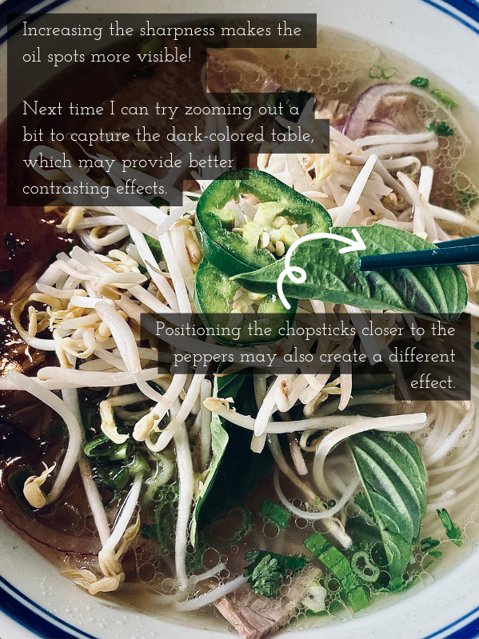

Blog
Photography notes/ideas here!
These are of my opinion and with an iPhone, I am NOT a professional :)

iPhone: Regular Photos vs Video-Captured Photos
The differences/preferences between capturing photos with the regular photo mode or the video-capture mode! (July, 2024)

iPhone: Low Budget Jewelry Photos
Take low budget jewelry photos with a laptop, your phone (camera), and a sheet of paper (May, 2024)

Photo Mood Guide
My perspectives on how adjustments like contrast affects the vibe a photo gives off. (May, 2024)

iPhone Photos: Taking better food photos
Capture more of your food with only your iPhone! (Summer, 2023)

iPhone Selfies/Portraits
Use your iPhone and take cool photos of yourself! Some poses you can do, and some thoughts on photo editing/adjustments. (Summer, 2023)